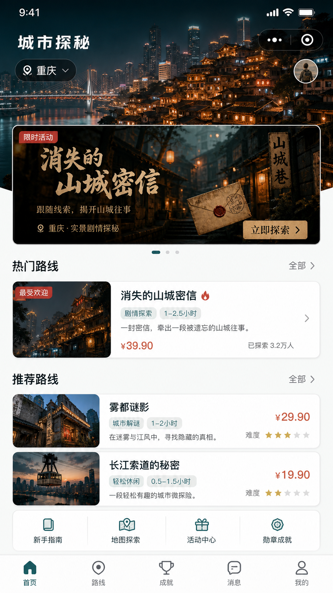
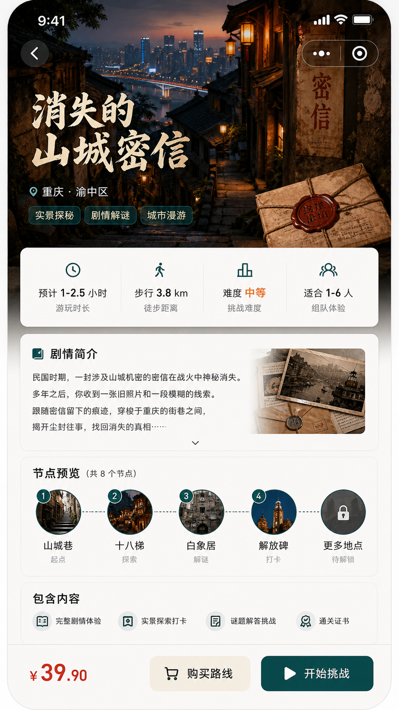
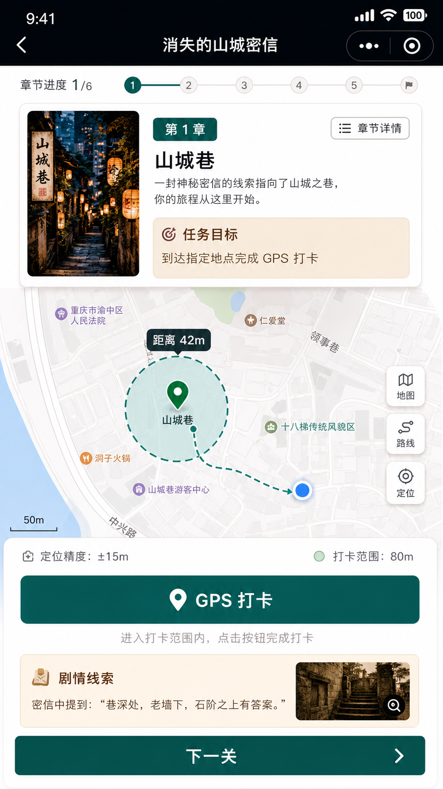
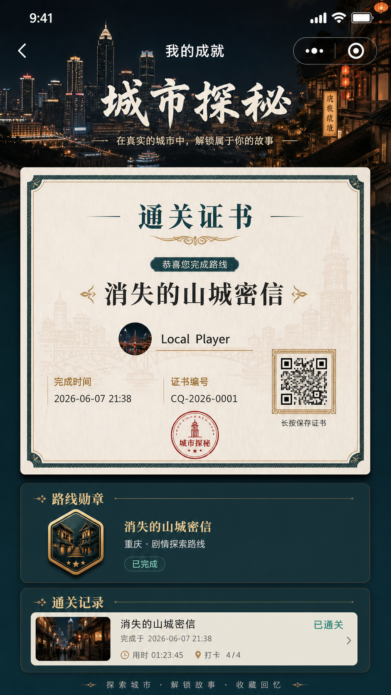

这就是目标视觉方向
你要的是这组高保真图的效果：重庆实景氛围、深青绿品牌色、暖金线索感、真实可付费剧本的质感。接下来真实小程序页面要按这个方向拆成组件，而不是只停留在骨架样式。
首页
城市选择、活动 Banner、热门路线和推荐路线要保持“文旅产品 + 剧本探秘”的第一眼质感。



落地方式不能直接把整张图当页面，要拆成真实组件：封面图、信息卡、按钮、节点列表、地图区、证书卡。
优先级先把首页和路线详情做到接近图像 1、2；它们决定用户是否愿意购买。
技术边界微信小程序里地图、授权、图片加载会有真实限制，所以需要在微信环境下再做最后适配。
下一步把当前 Taro 页面继续精修，按照这四张图做更强的视觉层级和真实交互。